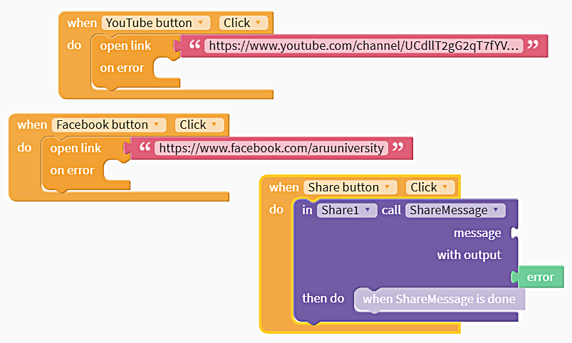
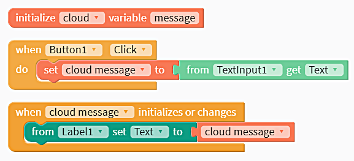
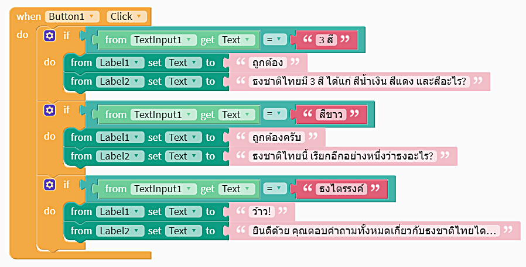
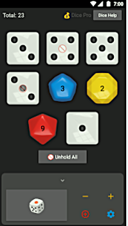

การสร้างภาพ Screenshot
โดย นิป เอมรัฐ
App Screenshot Maker
ไปที่ https://appinstitute.com/app-screenshot-maker/
คลิก Try it out >>
เลือกแพลตฟอร์ม Android หรือ Apple
อัพโหลด Screenshot โดยคลิกปุ่ม Choose Image
เลือกรูป > Open
เลือก Layout
ลงทะเบียนสมัครสมาชิกฟรี (Register an account)
เลือกอุปกรณ์
ตรงนี้ อาจเลือกตัวเลือกต่างๆ เพิ่มเติม เพื่อปรับแต่ง เช่น เปลี่ยนสีพื้นหลัง หรืออัพโหลดภาพเพื่อใช้เป็นภาพพื้นหลัง
คลิกปุ่ม Preview & Download
คลิก Download Set > Download เพื่อเริ่มต้นดาวน์โหลดรูป Screenshot
การตีพิมพ์หรือออกจำหน่าย (Publish) สำหรับระบบ Android
โดย นิป เอมรัฐ
การจำหน่ายขึ้น Google Play Store สำหรับอุปกรณ์ระบบ Android
ต้องมีบัญชี Google Play Developer account (ค่าสมัคร $25 จ่ายครั้งเดียว)
สมัครได้ที่นี่ https://play.google.com/apps/publish/signup/
Design assets
ไอคอน Icon ขนาด (512 x 512 px)
ภาพหน้าจอของแอป App screenshots
ภาพประกอบขนาด 1024 x 500 px)
คุณภาพของแอปเป็นสิ่งสำคัญ แนะนำให้อ่านคำแนะนำของ Google ที่นี่ https://play.google.com/about/developer-content-policy/#!?modal_active=none
การเตรียมการ
จะต้องระบุ app icon, name, package name และ version ของแอปก่อน
ชื่อของแอปที่ package name จะต้องไม่ซ้ำกับแอปอื่นที่อยู่บน Play Store
นอกจากนี้ ยังต้องระบุ Build และ Version Number
เลือก Download หรือ Publish > Publish to Google Play Store (Android)
ขั้นตอนการส่งเพื่อตรวจสอบ
ที่ Console ของ Google Play Developer สร้างแอปใหม่โดยคลิกปุ่ม Create Application
เลือกคำสั่ง App releases
คลิกปุ่ม Create Releases
เปิดการใช้ Google Play App signing
ลากไฟล์แอป (.apk) ไปวางยัง console
พิมพ์ questionnaire ระบุราคา pricing และ availability
ใส่ภาพประกอบอย่างน้อย 4 design assets - 2 screenshots, ไอคอนความละเอียดสูง (512 x 512 px) และภาพกราฟิกประกอบ (1024 x 500 px)
Thunkable. (2019, Feb 20). Publish to Play Store (Android). Restrieve from https://docs.thunkable.com/thunkable-cross-platform/publish/publish-to-play-store-android
Google. (2019, Feb 25). Developer Policy Center search: Let's build the world's most trusted source for apps and games. Restrieve from https://play.google.com/about/developer-content-policy/
การสร้าง Quiz
โดย นิป เอมรัฐ
สร้างแอปถาม-ตอบแบบง่ายๆ เหมาะสำหรับใช้ทดสอบความรู้ ติวสอบ
ที่ Splash Screen เปลี่ยนข้อความในช่อง Text เป็นชื่อที่เราต้องการ
เปลี่ยนภาพเอนิเมชันตามที่ต้องการ โดยอัพโหลดไฟล์ที่ Animation
ลากคอมโพเนนท์ปุ่ม (Button) ไปยังโทรศัพท์
ลากคอมโพเนนท์ข้อความ-พูด (Text-to-Speech) ไปยังโทรศัพท์
Blocks > Button1
ลากบลอกไปยัง Blocks Editor
When button1 click
do in Text-To-Speech1 call Speak
text "Hello, Nip."
link สำหรับทางลัดในการสร้าง Quiz https://www.youtube.com/redirect?q=https%3A%2F%2Fx.thunkable.com%2Fcopy%2F67a1e7d409e399404f043f7310d5626a&v=Yah0bKzHIng&event=video_description&redir_token=xxpltr8MQfIawssmPDiWDGRtk_d8MTU1MDY1ODA1MEAxNTUwNTcxNjUw
Thunkable. (2019, Jan 21). Build your own Quiz App. Restrieve from https://www.youtube.com/watch?v=Yah0bKzHIng
การสร้างปุ่มเชื่อมโยงและปุ่มแชร์
โดย นิป เอมรัฐ
ลาก Share จาก Social ไปวางที่ Invisible Components
ลาก Row จาก Layout ไปวางที่ด้านล่างของจอ หรือที่ด้านล่างของ Screen1
ลาก Button จาก User Interface ไปวางที่ด้านล่างของจอ
เปลี่ยนชื่อปุ่มทั้งสามที่ช่อง Text เป็น YouTube, Facebook และปุ่มแชร์ ตามลำดับ
เปลี่ยนรูปไอคอนโดยอัพโหลดรูปที่ BackgroundPicture
เมื่ออัพโหลดรูปไอคอนขึ้นไปแล้ว ก็ให้ลบชื่อไอคอนที่ช่อง Text ได้
เปลี่ยนความสูงของ Row1 ที่ช่อง Height เป็น Pick One: Fit contents, Fill container และเลือก Fit contents ที่ช่องที่สอง
เลือก Blocks และ YouTube button เลือก When YouTube button Click do ออกมาวาง
สำเนา When YouTube button Click do อีกสองอัน (กดแป้น Ctrl+C และ Ctrl+V)
เปลี่ยน YouTube button เป็น Facebook button และ Share button ตามลำดับ
ที่ลิ้นชัก Control ลากบล็อก open link ออกมาวางใน When YouTube button Click do
สำเนาบล็อก open link ออกมาวางใน When Facebook button Click do
ลากบล็อกว่างจากลิ้นชัก Text มาวางต่อที่ open link ทำสำเนามาวางที่ When Facebook button Click do เช่นกัน
ใส่ที่อยู่เว็บลงในบล็อกว่าง เช่น https://www.youtube.com/channel/UCdllT2gG2qT7fYV2k8KwjTg และ https://www.facebook.com/aruuniversity
ที่ลิ้นชัก Share1 ลากบล็อก in Share1 call ShareMessage มาวางต่อใน When Share button Click do
ปรับขนาดปุ่มแต่ละอัน โดยคลิกที่ปุ่มแล้วเลือกให้ Height กับ Width เป็น Absolute Size เลือกขนาดปุ่ม เช่น 50
ปรับขนาดขอบปุ่มที่ Margin - top bottom left right ระบุขนาด เช่น 5 px
คลิก Live Test
เป็นอันว่าเราได้สร้างปุ่มเชื่อมโยงและปุ่มแชร์สำเร็จแล้ว ไชโย!

บล็อกสำหรับการสร้างปุ่มเชื่อมโยงและปุ่มแชร์
Thunkable. (2018, Sep 5). Thunkable X Beginner Tutorial #8 "Webviewer App". Restrieve from https://www.youtube.com/watch?v=MDMM0cHvpUA&t=1s
Chat
โดย นิป เอมรัฐ
จาก User Interface ลาก Textinput, Label และ Button ไปวางยังโทรศัพท์
ที่แท็บ Blocks เปิดลิ้นชัก Variables ลาก “Initialize app variable to” ออกมาวางยัง blocks editor จะมีเสียงดังขึ้น เมื่อวางถูกตำแหน่ง
Initialize เลือก cloud แล้วตั้งชื่อ variable ว่า message
เปิดลิ้นชัก Button1 ลาก “when button1 click” ออกมาวางยัง blocks editor
เปิดลิ้นชัก Variables ลาก “set cloud message to” ออกมาวาง
เปิดลิ้นชัก Textinput1 ลาก “from textinput1 get Text” ออกมาวางต่อ
เปิดลิ้นชัก Variables ลาก "when cloud message initializes or changes" มาวางไว้ที่ด้านล่างของ “when Button1 Click”
จากนั้น ที่ Label1 เชื่อมบล็อก "from label1 set text" เข้ากับ "cloud message" ที่ได้จาก Variables
สำเนา URL ของ project งานส่งให้เพื่อน เพื่อว่าเพื่อนจะสามารถพูดคุยกับเราได้ ทั้งนี้ เพื่อนจะต้องมีแอป Thunkable Live ด้วย
ทั้งตัวเราและเพื่อนจะต้องคลิกปุ่ม "Live Test"
พิมพ์ข้อความลงใน textbox แล้วแท็บปุ่มส่งข้อความออกไป
(ทางเลือก)
ทำให้ข้อความหายไปหลังจากที่ปรากฏให้เห็นอยู่ช่วงเวลาหนึ่ง
สร้างห้อง Chat ห้องอื่นๆ โดยใช้ชื่อตัวแปรที่แตกต่างกันไป

บล็อกสำหรับการสร้าง Chat
Live TV
โดย นิป เอมรัฐ
Workpoint Official https://www.youtube.com/watch?v=erI6tgtkTPE
Peace TV https://www.youtube.com/watch?v=f_DLG_yqvVE
Learn English 24/7 with EnglishClass101 TV https://www.youtube.com/watch?v=gt8TEmihgFw
Learning English - 24/7 TV https://www.youtube.com/watch?v=X-LyDXloO5A
Guardian News https://www.youtube.com/watch?v=_mkEbH94b1U
Al Jazeera English https://www.youtube.com/watch?v=oGwHtl4yQDg
France 24 English https://www.youtube.com/watch?v=J78SdCzzumA
Best of Bean https://www.youtube.com/watch?v=ovmSF0RIwTQ
Nasa TV https://www.youtube.com/watch?v=21X5lGlDOfg
How the Universe Works https://www.youtube.com/watch?v=C0mgbEA1yas
ABC News (Australia) https://www.youtube.com/watch?v=rQSwh3bgs5k
Mike and Mia - Nursery Rhymes and Kids Songs https://www.youtube.com/watch?v=VgbK8r0LAEo
Peppa Pig https://www.youtube.com/watch?v=qRrr0QgemLk
PJ Masks https://www.youtube.com/watch?v=uxHoIkA5u5s
Webviewer App
โดย นิป เอมรัฐ
https://www.youtube.com/watch?v=MDMM0cHvpUA
How to change screens with navigators
โดย นิป เอมรัฐ
https://www.youtube.com/watch?v=Z9R_kg4ew2M
สร้างแบบทดสอบ (Quiz)
โดย นิป เอมรัฐ
แอปทดสอบความรู้ น่าจะเป็นสิ่งที่ครูทุกคนปรารถนาที่จะสร้างด้วยมือของตัวเอง เรามาลองทำกัน
จาก User Interface ลาก Label 2 อันไปวางยังโทรศัพท์
ลาก “Text Input” อันไปวางยังด้านล่างของโทรศัพท์ เราจะใช้มันเพื่อให้ผู้ใช้พิมพ์คำตอบลงไป
ลาก Button อันไปวางยังโทรศัพท์ ตั้งชื่อว่า "ส่งคำตอบ"
เปิดลิ้นชัก Button1 ลาก “when Button1 Click” ออกมาวางยัง blocks editor จะมีเสียงดังขึ้น เมื่อวางถูกตำแหน่ง
เปิดลิ้นชัก “Control” ลาก “if” มาวางไว้ที่ภายในของ “when Button1 Click”
จากนั้น เปิดลิ้นชัก "Logic" ลากบล็อก equal มาวางไว้ที่ภายในซ็อกเก็ต "if"
เปิดลิ้นชัก TextInput1 ลาก “from TextInput1 get Text” ออกมาวางไว้ภายในบล็อก equals เครื่องหมายเท่ากับ
เปิดลิ้นชัก text ลากบล็อก text มาวางไว้ที่ภายในบล็อก equals ด้านขวา
หากข้อความที่พิมพ์ตอบเข้ามาตรงกับคำตอบที่ถูกต้อง (3 สี) label แรกจะถูกเปลี่ยนเป็นข้อความว่า "ถูกต้อง!" แล้ว label ที่สองจะแสดงคำถามที่สองต่อไป
ให้ใช้บล็อก “from label1 set text” ภายในลิ้นชัก Label1 กำหนดข้อความว่า "ถูกต้อง!" ส่วนของ Label2 ก็ให้ทำเช่นเดียวกัน โดยแสดงเป็นคำถามที่สอง
คลิก Live Test และทดสอบแอปในเครื่องของคุณว่าทำถูกต้องดังที่หวังไว้หรือไม่
ทำข้อต่อๆ ไป โดยคลิกขวาที่บล็อก if เลือก duplicate ซึ่งจะสำเนาบล็อก if สำหรับใช้กับคำถามข้อ 2
ใช้วิธีการเดียวกันนี้ ในการทำคำถามข้อที่เหลือทั้งหมด
คลิก Live Test เพื่อทดสอบอีกครั้ง
ไชโย!

บล็อกสำหรับสร้างแบบทดสอบ
การสร้างแอปแบบปัดเลื่อนหน้าจอ
โดย นิป เอมรัฐ
https://www.youtube.com/watch?v=kFp_c76lQ5w
ภาพเคลื่อนไหว
โดย นิป เอมรัฐ
ภาพเคลื่อนไหว (animation) ช่วยดึงดูดความสนใจได้ดี และยังดูน่ารักด้วย มาดูวิธีการใส่ภาพลงในแอปกัน
ก่อนอื่น เตรียมรูปภาพที่ต้องการ โดยอาจจะสร้างขึ้นเองจากโปรแกรมต่างๆ เช่น Adobe After Effects หรือจะหาจาก lottiefiles.com* ซึ่งเป็นเว็บไซต์แชร์ภาพเคลื่อนไหวก็ได้
จาก Image ลาก "Animation" ไปวางยังโทรศัพท์
อัพโหลดไฟล์ภาพขึ้นไป โดยคลิกที่ช่อง Animation ในแถบ Animation1 ทางขวามือ คลิก Upload files เลือกไฟล์ภาพที่ต้องการ (*.json) แล้วคลิกปุ่ม Open
ปรับแต่งค่าขนาดความสูงและความกว้างของภาพตามต้องการ** เช่น หากต้องการให้ภาพแสดงเต็มจอ ก็ให้ปรับ Height และ Width ให้ช่องบนเป็น Pick Ones: Fit contents, Fill container และช่องล่างเป็น Fill container
*เพื่อความสะดวก อาจติดตั้งแอป Lottie Preview เพื่อดูภาพเคลื่อนไหวในอุปกรณ์ของคุณ ก่อนจะนำมาใช้จริง (preview)
** เลือก Relative Size (e.g. "50%"") หากต้องการระบุขนาดภาพให้สัมพันธ์กับขนาดจริงเป็นเปอร์เซ็นต์ และเลือก Absolute Size เมื่อต้องการระบุขนาดของภาพให้ตรงตามตัวเลขที่พิมพ์ลงไป
ภาพเคลื่อนไหว (animation)
Thunkable. (2018, Sep 18). Thunkable X Beginner Tip "How to add animation to your apps". Retrieve from https://www.youtube.com/watch?v=IS0cLh9XVC8
Publish to App Store (iOS)
โดย นิป เอมรัฐ
//docs.thunkable.com/thunkable-cross-platform/publish/publish-to-app-store-ios
เครื่องแปลภาษา
โดย นิป เอมรัฐ
เครื่องแปลภาษาสามารถแปลได้หลายภาษาตามที่เรากำหนด ลองแปลภาษาไทยเป็นภาษาอังกฤษกันดู
จาก User Interface ลาก "Button" ไปวางยังโทรศัพท์
จาก User Interface ลาก "TextInput" ไปวางยังโทรศัพท์
เราจะปรับขนาดของ TextInput โดยที่คุณลักษณะด้านขวา เลือก height เป็น "Relative Size" และพิมพ์ 20% ลงในช่องด้านล่าง
ที่ Voice ลาก "Text-to-Speech" ไปวางยังโทรศัพท์
ที่ Voice ลาก "Translator" ไปวางยังโทรศัพท์
ที่คุณลักษณะของ Translator ซึ่งอยู่ด้านขวามือ เราจะเปลี่ยน/เลือกภาษาที่นี่ ภาษาต้นทาง source language คือภาษาที่ผู้ใช้ถนัด ส่วนภาษาปลายทาง target lanugage จะเป็นภาษาที่เราต้องการให้แปลไปเป็น ในตัวอย่างนี้ เราจะเลือกภาษาไทยเป็นภาษาต้นทาง เพื่อเปลี่ยนหรือแปลไปเป็นภาษาปลายทาง คือ ภาษาอังกฤษ
คลิกแท็บ Blocks เพื่อเริ่มเขียนโปรแกรม
คลิก Button1 เพื่อเปิดลิ้นชักของ Button1 ออกมา
ลาก “when Button1 Click” ออกมาวางยัง blocks editor
เปิดลิ้นชัก Translator1 ลาก "in Translator1 call Translate" มาวางที่ "when Button1 Click" จะมีเสียงดังขึ้น เมื่อวางถูกตำแหน่ง
เปิดลิ้นชัก TextInput1 ลาก "from TextInput1 get Text" ออกมาวางยัง blocks editor เชื่อมต่อกับซ็อกเก็ต "text to translate."
ที่ลิ้นชัก Text_to_Speech1 ลาก "in Text-to-Speech1 call Speak" มาวางที่ Translator1
ลากบล็อกผลลัพธ์จาก "in Translator1 call Translate" มาวางที่ซ็อกเก็ต "text" ของบล็อก Text-to-Speech
คลิก Live Test
พิมพ์ข้อความหรือประโยคภาษาไทยลงไป แตะคำว่า Button ในแอป โทรศัพท์ของคุณจะพูดแปลออกมาเป็นภาษาอังกฤษ
สร้าง WebApp
โดย นิป เอมรัฐ
จาก User Interface ลาก Web Viewer ไปวางยังโทรศัพท์
ระบุที่อยู่เว็บลงในช่อง URL ที่คุณลักษณะด้านขวา โดยต้องเขียนที่อยู่เต็มเท่านั้น เช่น http://drnip.com คือมี http:// หรือ https:// ด้วย
คลิก Live Test
เปิดแอป โทรศัพท์ของคุณจะแสดงเว็บไซต์ที่คุณกำหนดไว้ออกมา ไชโย!
Turn websites into apps
โดย นิป เอมรัฐ
https://www.youtube.com/watch?v=e87deMVVgwk
Disc - ตัวอย่างแอปที่สร้างด้วย Thunkable
โดย นิป เอมรัฐ
Disc เป็นแอปฟรีที่สร้างด้วย Thunkable ซึ่งได้รับความนิยมอย่างสูง มียอดดาวน์โหลดมากกว่าห้าแสนครั้ง เราใช้มันสุ่มตัวเลข โดยสามารถทอยลูกเต๋าได้ถึง 6 ลูกพร้อมกัน
ระบบ Android ดาวน์โหลดได้ที่นี่: https://play.google.com/store/apps/details?id=appinventor.ai_ansonsavage.DiceRole_Magic8Ball_Extension_Two_Die

Image Recognition
โดย นิป เอมรัฐ
จาก User Interface ลาก Button ไปวางยังโทรศัพท์
จาก Image ลาก Image ไปวางยังโทรศัพท์ เหนือปุ่ม
จาก Image ลาก Camera ไปวางยังโทรศัพท์ Camera1 จะปรากฏที่ด้านล่างของโทรศัพท์
คลิกแท็บ Blocks เพื่อเริ่มเขียนโปรแกรม
คลิก Button1 เพื่อเปิดลิ้นชักของ Button1 ออกมา
ลาก "when Button1 Click" ไปวางยังโทรศัพท์
เปิดลิ้นชัก Camera1 ลาก "in Camera1 call TakePhoto" มาวางที่ "when Button1 Click" จะมีเสียงดังขึ้น เมื่อวางถูกตำแหน่ง
เปิดลิ้นชัก Image1 ลาก "from Image1 set Picture to" มาวางที่ "in Camera1 call TakePhoto"
ลาก "photo" มาวางยัง "from Image1 set Picture to"
คลิก Live Test
แตะคำว่า Button ในแอป โทรศัพท์ของคุณจะเปิดกล้องออกมา
กดปุ่มถ่ายภาพ เลือกคำสั่ง Use Photo ภาพจะปรากฏขึ้นเหนือปุ่ม
กลับมาที่ design จาก User Interface ลาก Label มาวางใต้ปุ่ม
จาก Image ลาก "Image Recognizer" ไปวางยังโทรศัพท์
เปิดลิ้นชัก Image_Recognizer1 ลาก "in Image_Recognizer1 call Upload" มาวางที่ "in Camera1 call TakePhoto"
ลาก "photo" จาก Camera1 ไปวางที่ซ็อกเก็ต "image" ของ Image_Recognizer1
เปิดลิ้นชัก Label1 ลาก "from Label1 set Text to" มาวางที่ "in Image_Recognizer1 call Upload"
จาก Image ลาก "description" จาก Image_Recognizer1 ไปวางที่ "from Label1 set Text to"
คลิก Live Test
แตะคำว่า Button ในแอปเพื่อทดสอบการทำงานของ Microsoft Image Recognition ไชโย!
สุ่มคำตอบ
โดย นิป เอมรัฐ
จาก User Interface ลาก Button ไปวางยังโทรศัพท์
จาก User Interface ลาก Label ไปวางยังโทรศัพท์
คลิกแท็บ Blocks เพื่อเริ่มเขียนโปรแกรม
คลิก Button1 เพื่อเปิดลิ้นชักของ Button1 ออกมา
ลาก “when Button1 Click” ออกมาวางยัง blocks editor
เปิดลิ้นชัก Label1 ลาก "from Label1 set Text to" มาวางที่ "when Button1 Click" จะมีเสียงดังขึ้น เมื่อวางถูกตำแหน่ง
เปิดลิ้นชัก Lists ลาก "random item of list" มาวางที่ “from Label1 set Text to”
เพิ่มข้อความลงในบล็อกแรก
คลิก Live Test
แตะคำว่า Button ในแอป โทรศัพท์ของคุณจะสุ่มแสดงข้อความที่คุณกำหนดไว้ออกมา ไชโย!
รูปบนปุ่ม
โดย นิป เอมรัฐ
ที่คุณลักษณะของปุ่ม ด้านขวามือของจอ ลบชื่อปุ่มในช่อง Text อัพโหลดรูปภาพที่จะแสดงบนปุ่มในช่อง BackgroundPicture ปรับขนาดปุ่มตามต้องการ เลือก Absolute Size ในช่อง Height และ Width พิมพ์ตัวเลขขนาดที่ต้องการ เช่น 200 และ 200
ดาวน์โหลดและติดตั้งแอปที่สร้าง
โดย นิป เอมรัฐ
คลิก Download
เลือก Download iOS App หรือ Download Android App
ใส่อีเมลลงในช่อง Email:
คลิกปุ่ม Send
จะได้รับลิงค์ดาวน์โหลดแอปภายในเวลาไม่นาน
จากนั้น ใช้โทรศัพท์หรือแท็บเล็ตดำเนินการ ดังนี้
เปิดอีเมลดูจดหมายที่ส่งมาจาก Thunkable
แท็บเลือกปุ่ม Tap to Download
เลือก Open with: Safari
เลือกปุ่ม Download
ให้เลือก Install
แอปจะถูกติดตั้งลงในเครื่องของคุณ
ตั้งชื่อแอป และเปลี่ยนไอคอน
โดย นิป เอมรัฐ
คลิกไอคอนรูปตัวบีเวอร์ (Beaver) สีแดงตรงมุมบนซ้าย
ที่ App Settings ด้านขวา พิมพ์ชื่อแอปที่ต้องการลงในช่อง App Name:
ที่ช่อง Icon: คลิกปุ่ม Upload Icon
เลือกไฟล์รูปไอคอนที่ต้องการ แล้วคลิกปุ่ม Open
คลิกเล่นเสียง
โดย นิป เอมรัฐ
จาก User Interface ลาก Button ไปวางยังโทรศัพท์
จาก Voice ลาก Sound ไปวางยังโทรศัพท์
เลือก Upload files เพื่ออัพโหลดไฟล์เสียง หรือ..
เลือก Type in URL เพื่อระบุตำแหน่งของไฟล์เสียง เช่น https://drnip.github.io/audio/friend.mp3
คลิกแท็บ Blocks เพื่อเริ่มเขียนโปรแกรม
คลิก Button1 เพื่อเปิดลิ้นชักของ Button1 ออกมา
ลาก “when Button1 Click” ออกมาวางยัง blocks editor
เปิดลิ้นชัก Sound1 ลาก "in Sound1 call Play" มาวางที่ "when Button1 Click" จะมีเสียงดังขึ้น เมื่อวางถูกตำแหน่ง
คลิก Live Test
แตะคำว่า Button ในแอป โทรศัพท์ของคุณจะเล่นเสียงที่คุณกำหนดไว้ออกมา ไชโย!
เคล็ดลับ
คลิกแท็บ Design เลือก Button1
ที่คุณลักษณะของ Button1 คลิกที่ช่อง Text
พิมพ์ชื่อเพลง ชื่อเพลงจะปรากฏที่ปุ่ม
มือถือพูดได้
โดย นิป เอมรัฐ
จาก User Interface ลาก Button ไปวางยังโทรศัพท์
จาก Voice ลาก Text-to-Speak ไปวางยังโทรศัพท์
คลิกแท็บ Blocks เพื่อเริ่มเขียนโปรแกรม
คลิก Button1 เพื่อเปิดลิ้นชักของ Buttone1 ออกมา
ลาก “when Button1 Click” ออกมาวางยัง blocks editor
เปิดลิ้นชัก Text_to_Speech1 ลาก "in Text_to_Speech1 call Speak" มาวางที่ "when Button1 Click" จะมีเสียงดังขึ้น เมื่อวางถูกตำแหน่ง
เปิดลิ้นชัก Text ลาก text ว่าง มาวางที่ช่องว่างของ "in Text_to_Speech1 call Speak"
พิมพ์ข้อความลงในช่องว่าง เช่น "I love Thunkable"
คลิก Live Test
แตะคำว่า Button ในแอป โทรศัพท์ของคุณจะพูดข้อความที่คุณกำหนดไว้ออกมา ไชโย!
Text-to-Speech
โดย นิป เอมรัฐ
สร้างแอปพูดได้ จากข้อความภาษาอังกฤษที่เราพิมพ์
ลากคอมโพเนนท์ปุ่ม (Button) ไปยังโทรศัพท์
ลากคอมโพเนนท์ข้อความ-พูด (Text-to-Speech) ไปยังโทรศัพท์
Blocks > Button1
ลากบลอกไปยัง Blocks Editor
When button1 click
do in Text-To-Speech1 call Speak
text "Hello, Nip."
Thunkable. (2018, Aug 9). Thunkable X Beginner Tutorial #2 "Text-to-Speech". Restrieve from https://www.youtube.com/watch?v=_n1NMgVU-y8
Thunkable X Playlist
โดย นิป เอมรัฐ
เรียนรู้การสร้างแอป วีดิโอจากบริษัท Thunkable
VIDEO
เริ่มต้นสร้างแอป (platform)
การเตรียมพร้อม
ไปที่ thunkable.com
Log in ด้วยบัญชีของเราที่ใช้กับ Google เช่น nip@gmail.com
ดาวน์โหลด/ติดตั้งแอป Thunkable Live จาก App Store หรือ Play Store ตามระบบที่เราใช้งาน
ล็อกอินเข้าไปในแอป
คลิกปุ่ม Live Test ที่หน้าเว็บในคอมพิวเตอร์
เราจะลงบันทึกเข้า (login) ทั้งเว็บและแอปพร้อมๆ กัน ชึ่งจะช่วยในการทดสอบ คือ ขณะที่เรากำลังสร้างแอปอยู่ เราสามารถทดสอบแอปได้จากแอป Thunkable Live ในมือถือหรือแท็บเล็ต โดยคลิก Live Test บนหน้าเว็บ
หน้าจอ ประกอบด้วย
App designer pane
Components section
Blocks section
Thunkable. (2018, Aug 9). Thunkable X Beginner Tutorial #1 "Platform Overview". Restrieve from https://www.youtube.com/watch?v=YrONgW8udmM
สร้างแอปของเราเองด้วย Thunkable
โดย นิป เอมรัฐ
Thunkable
ใครๆ ก็สามารถสร้างแอปของตัวเองได้ง่ายๆ ด้วย Thunkable
แทนที่จะต้องเขียนรหัสคอมพิวเตอร์ (code) เราเพียงลากส่วนประกอบ (components) นำมาวางเชื่อมต่อกันเป็นบล็อก (blocks) งานที่สร้างขึ้นสามารถใช้ได้ทั้งในอุปกรณ์ที่ใช้ระบบ Android และ iOS (cross platform) นอกจากนี้ เรายังสามารถนำตัวอย่างงานจากห้องแสดงผลงาน (gallery) มาปรับแต่งใช้งานได้ หากมีปัญหาติดขัดหรือคำถามใดๆ ก็ยังมีชุมชนผู้ใช้จำนวนมากที่คอยช่วยเหลือ ที่สำคัญคือ เราสามารถใช้ได้ฟรี โดยไม่จำกัดจำนวนงาน
Thunkable มีสองรุ่น คือ Thunkable Classic Android สำหรับอุปกรณ์ระบบ Android และ Thunkable X หรือ Thunkable Cross Platform ที่สามารถใช้ได้ทั้งระบบ Android และระบบ iOS
บรืษัท Thunkable (thunkable.com) ก่อตั้งโดย Arun Saigal และ WeiHua James Li
ขั้นตอนการสร้างแอปด้วย Thunkable
Links:
อ่าน:Who Would Have Thought A Research Project Could Become A Great Startup? Retrieve from https://www.forbes.com/sites/frederickdaso/2018/06/13/who-would-have-thunk-a-research-project-could-become-a-great-startup/#280fc7691cca
การสร้างแอปพลิเคชันด้วย Thunkable
โดย นิป เอมรัฐ
เอกสาร PDF เกี่ยวกับ App Inventor ซึ่งเป็นต้นแบบของ Thunkable แนะนำให้อ่านประกอบ
ดาวน์โหลด Click
ฝังไฟล์เอกสาร PDF ลงในหน้าเว็บด้วยรหัสต่อไปนี้
<object width="400" height="400" data="appinventor.pdf"></object>
คำแนะนำ
โดย นิป เอมรัฐ
บทเรียนนี้อาจไม่เหมาะสำหรับครูคอมพิวเตอร์ เนื่องจากง่ายเกินไป